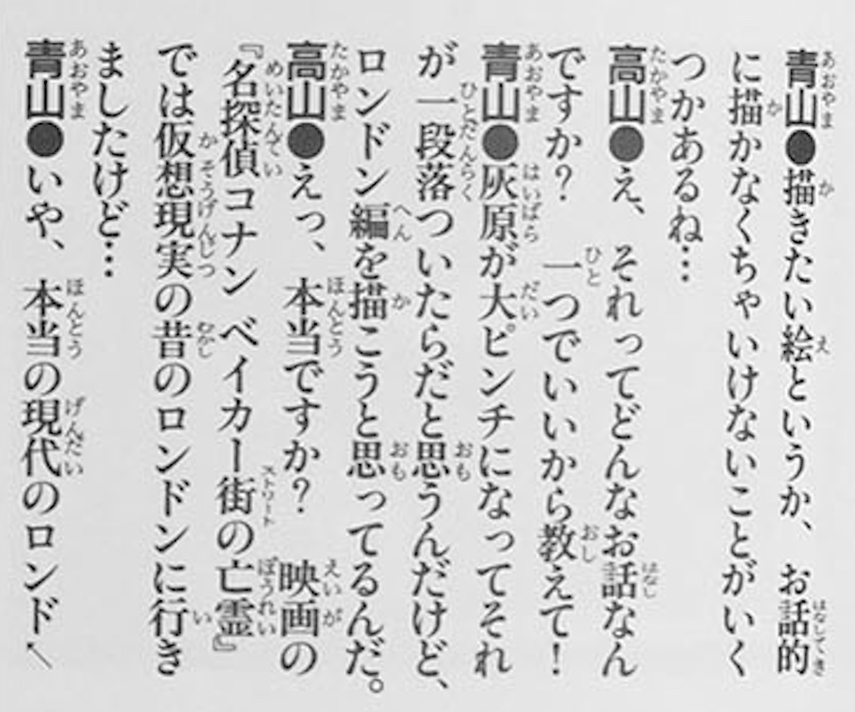
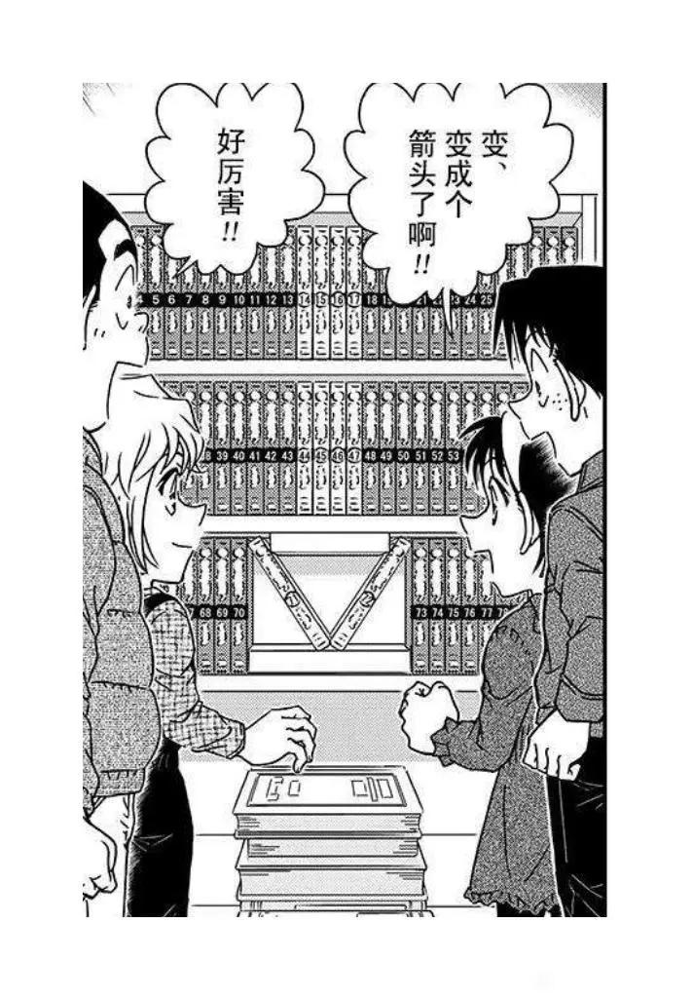
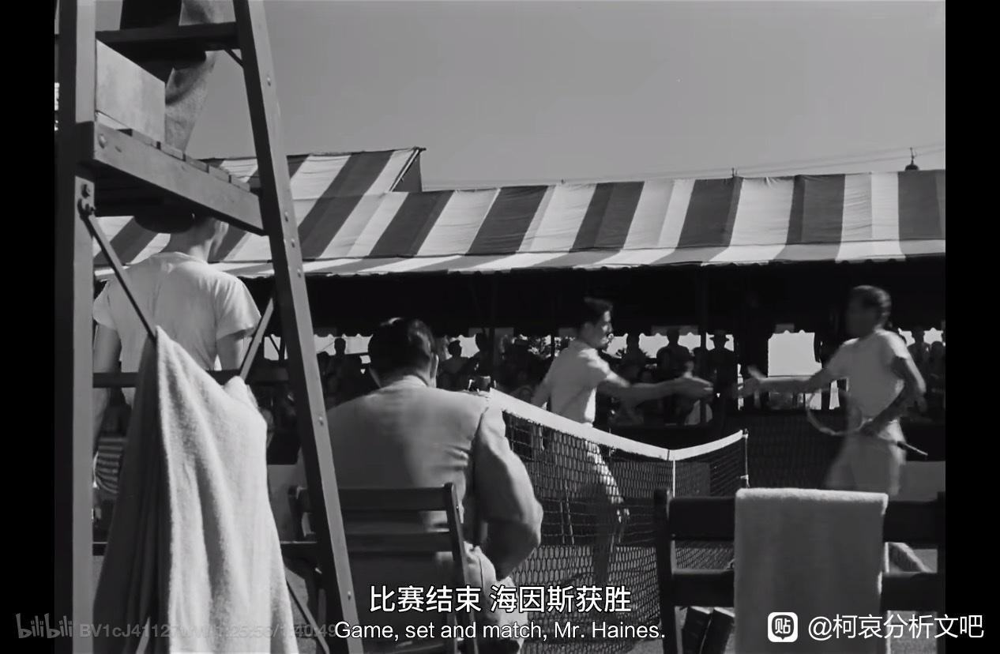
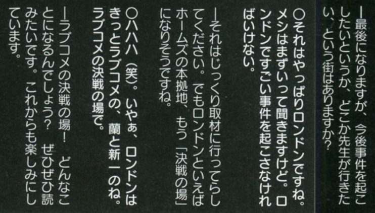

在2003年的柯南彩色原画全集中，有一篇青山✖️高山南的对谈，其中谈到了他想画伦敦篇。对于这个对话，广泛流传的翻译是“灰原会陷入危险，然后故事告一段落后结束。不过这个故事会发生在伦敦”（长春版、事务所论坛的电子版整理和网上的转载均采用这一翻译） 这句话也被当作【青山本来想在伦敦篇画柯哀】的依据。
但是看了扫图的原文，才发现这个翻译其实错得离谱。这句话的正确翻译是：灰原正在遭遇重大危机，等到这个事件告一段落后我想画伦敦篇。
画集出版于2003年，漫画在贝姐篇后期，快要到满月篇的地方。也就是说青山这里说的哀陷入危机就是在说贝姐而不是伦敦篇。“我现在还在画哀和贝姐的故事，等这个大篇章画完了，将来想画伦敦篇”
总结一下，仅从这个访谈中是无法得知当时说的伦敦篇是不是会有哀登场的。伦敦篇后我们确实看到了伦敦篇和风筝篇的对比，但是“他本来就想在伦敦画柯哀”是没有根据的。想没想过他反正没说。文吧人要严谨，以后讨论伦敦篇最好还是更加关注于漫画本身，以及风筝篇对比。
（灰原会在伦敦遇到危机说明boss据点在英国，boss日英混血等等理论也同时失去了一大论据 ）
）
但是看了扫图的原文，才发现这个翻译其实错得离谱。这句话的正确翻译是：灰原正在遭遇重大危机，等到这个事件告一段落后我想画伦敦篇。
画集出版于2003年，漫画在贝姐篇后期，快要到满月篇的地方。也就是说青山这里说的哀陷入危机就是在说贝姐而不是伦敦篇。“我现在还在画哀和贝姐的故事，等这个大篇章画完了，将来想画伦敦篇”
总结一下，仅从这个访谈中是无法得知当时说的伦敦篇是不是会有哀登场的。伦敦篇后我们确实看到了伦敦篇和风筝篇的对比，但是“他本来就想在伦敦画柯哀”是没有根据的。想没想过他反正没说。文吧人要严谨，以后讨论伦敦篇最好还是更加关注于漫画本身，以及风筝篇对比。
（灰原会在伦敦遇到危机说明boss据点在英国，boss日英混血等等理论也同时失去了一大论据
）

也就是说伦敦篇对新兰的恶意是早就计划好的……
语言不通真是一大障碍啊，某句话广泛传播最后发现是误译的事好多
上一个问答的【想画的画……其实是想画的故事有好几个……】
这句话其实也有很大问题，应该是【与其说是想画的，不如说是剧情上需要所以不得不画的故事有好几个吧】
也就是说他当时设想的伦敦篇的确是剧情上必须要有的，可能是主线相关也可能是有重要人物。
这句话其实也有很大问题，应该是【与其说是想画的，不如说是剧情上需要所以不得不画的故事有好几个吧】
也就是说他当时设想的伦敦篇的确是剧情上必须要有的，可能是主线相关也可能是有重要人物。
2024-03-17 21:38 | bearaven:无论他想法变了没有，现实他端出来的伦敦篇最重要的意象之一是默示录，调调像纽约篇的精神姐妹篇。2024-03-17 22:19 | 世界上没有真理:回复 bearaven :倫敦篇很像是結局的一次預演，但我覺得倫敦篇不是基於柯和哀原本的劇情並不影響分析，有些吧友擔心很多倫敦篇分析需要從頭推翻2024-03-17 23:03 | bearaven:回复 世界上没有真理 :也无所谓吧，那种事。 伦敦篇分析又不是全部立足于这点访谈的脆弱得要死的体系，大多数都是基于现在那个伦敦篇而不是想象中的那个，神话系符号基本和这个访谈无关的。2024-03-17 23:07 | 世界上没有真理:回复 bearaven :確實，神話體系比較重要，而且倫敦明顯跟紐約是姐妹篇，有沒有那個訪談都不影響體系的建立2024-03-17 23:30 | bearaven:毕竟分析文又不是以那种一个人做懒人包其他人对过程毫无兴趣只是拿着“结论”到处甩为主的。 说句不好听的，天天看“对家”脸色而无视作品本身的话，那所谓“对家”的看法在这种人心里的重要性其实远高于作品分析和自己观点。
严谨，不过错误翻译就像泼出去的水一样，收不回来了 只能慢慢科普了
只能慢慢科普了
只能慢慢科普了引用的不是这段对话吧，引用的那段后面还讲到护照问题。
原来如此！
厉害厉害
字词
诶，那南姐提出来的护照是怎么回事
护照那段对话的正确翻译：
高山：啊咧？但是柯南能拿到护照吗？是需要户籍的吧。
青山：啊，我没想那么多……不过，阿笠博士或者别的谁会有办法的。大概（笑）
高山：毕竟柯南有在上小学嘛……等等，仔细想想是不是不太好？
青山：但是柯南上小学也没有给别人添麻烦。大概没什么不好的吧？
这段对话的意思更像是：博士有办法给他办理小学的入学，应该能在户籍上动点手脚吧。
高山：啊咧？但是柯南能拿到护照吗？是需要户籍的吧。
青山：啊，我没想那么多……不过，阿笠博士或者别的谁会有办法的。大概（笑）
高山：毕竟柯南有在上小学嘛……等等，仔细想想是不是不太好？
青山：但是柯南上小学也没有给别人添麻烦。大概没什么不好的吧？
这段对话的意思更像是：博士有办法给他办理小学的入学，应该能在户籍上动点手脚吧。
2024-03-18 11:29 | 贴吧用户_0bDS2EM:“博士！快帮我搞个假护照，不然没法玩”2024-03-19 16:18 | 水溶100度C:那也就是说，假设“原计划”是让博士来解决柯南的难题，最后实际上是由哀来解决，并且还安排了哀事先知道柯南会提前用药，然后很体贴的让有希子帮忙带药（其实也可以偷偷给博士一颗以防万一，但73偏不这么画），兰姐从小混到大，也就混了个***里的八卦素材，小哀出场直接变美团跑腿了2024-03-19 16:25 | 水溶100度C:我只能说，构思是一回事，实操又是另一回事，文吧的内容是大家集思广益的结果，不是“正确答案”，作者想给任何一个角色buff太简单了，当然降低角色身份也很简单，但按照最新画作内容来推，sr想翻盘很难
引用的不是青山伦敦篇想画柯哀，南姐说护照问题哀出不了国，青山才打消这个想法那个访谈吗？你怎么不搬那段啊？
2024-03-17 20:55 | 圈量子:看我上面的回复，两个人只讨论了柯南的护照问题，没有提到哀
画伦敦篇的话，一般是雪林福特和夏洛克一起画。进阶想法就是看青山打算拓展福尔摩斯VS莫里亚蒂（以gin为代表的组织）还是福尔摩斯（实际上是柯南道尔）VS莫里斯 勒布朗。
2024-03-17 21:36 | bearaven:就福尔摩斯的定位，伦敦篇象征里的朝圣部分是少不了的
那他周期控制得可真好。（灰原危机）满月篇到43，第二段箭柄；伦敦篇真的憋了28卷去做这个箭头。
不得不画是么。护照问题没浮出水面的话，他的原案大纲……
不得不画是么。护照问题没浮出水面的话，他的原案大纲……

推倒基于此的所谓原本是哀的故事的论证的部分，而Miss Glass其实来自于镜头语言，甚至可能来源于希区柯克电影，那些基于现在伦敦篇的分析基本还能站住。

好吧，谢谢楼主，搞分析还是要严谨的好～
那就借安室的话，对几大分析有必要从头开始梳理洗一遍，最好是有日文版出处
有网页版的全文吗这个？日语渣想要个全文看看大概意思
话说这样看的话二十多年前的翻译问题确实很多，当时台版的漫画和动画（不限名柯）都翻译成一坨，但漫画和动画已经有不少人纠错了，这些对谈可能比较少人接触所以没人纠错？
话说这样看的话二十多年前的翻译问题确实很多，当时台版的漫画和动画（不限名柯）都翻译成一坨，但漫画和动画已经有不少人纠错了，这些对谈可能比较少人接触所以没人纠错？
2024-03-17 22:52 | 圈量子:吧里有个文吧指南，其中有一个链接是和事务所论坛有关的，里面可以下载到一些采访的原文。2024-03-17 22:53 | 黑葉🌿:回复 圈量子 :好的，我去瞧瞧，谢谢

我认为原来的翻译没有问题。根据原文的直译就是你贴的那段长春版和事务所版的话。灰原遇到危机，然后故事告一段落后结束。这段和你的翻译没有多大区别。区别在于后半句，长春的翻译是：灰原遇到危机的整个事件是青山想画的伦敦篇内容，你的翻译是：灰原遇到危机后，再画伦敦篇的内容。原文里没有写灰原遇到危机“后”再画伦敦篇内容的意思，所以我认为原来的翻译是正确的。
2024-03-18 02:24 | 圈量子:他在这里说的伦敦篇和灰原的危机是两码事。灰原遇到危机是现在时，也就是正在连载的贝尔摩德篇；伦敦篇是等这个危机解决后要画的内容，用的是将来时。2024-03-18 03:06 | 音子0806:楼主的翻译是正确的，没必要讨论了
坐等大佬们认证
@Yao_CPT 怎麼看翻譯的問題？
2024-03-18 14:18 | Yao_CPT:原來是這樣啊，應該就是樓主說的那樣了。當年還被錯誤翻譯誤導而對73耿耿於懷2024-03-18 19:00 | 世界上没有真理:回复 Yao_CPT :謝謝yao大~當年我也很不爽


2004年LOVE Conan的青山访谈，提到伦敦篇是新兰爱情喜剧的决战场。这篇访谈里提到正在连载冲绳的事情，青山让摄影师拍了那霸机场的照片，推测应该是2004年1月连载的《沉默的航线》。所以伦敦篇画新兰至少是2004年1月的时候就已经决定了的

2024-03-18 00:25 | 世界上没有真理:所以哪個翻譯是對的？2024-03-18 00:42 | 平者深黑:回复 世界上没有真理 :我觉得楼主的理解是对的2024-03-18 00:48 | 平者深黑:这篇访谈还附带了青山的工作室的照片，桌上放着File.465（2004/01/21发表）的线稿，所以应该确实是2004年1月的采访2024-03-18 01:29 | bearaven:2004年设想的决战实际端出来的成品最后来个胜者Miss Glass？2024-03-18 01:42 | 贴吧用户_GMSD67V:回复 bearaven :再会篇刚强调了雪林福特，太久不看了，后面的伦敦行应该受到相棒里面右京伦敦行的影响。水谷丰那边可以挖一挖。青山 本人还去相棒元旦的特别篇客串过。2024-03-18 01:47 | 世界上没有真理:回复 平者深黑 :謝謝平者大大~2024-03-18 01:53 | 世界上没有真理:回复 bearaven :整個倫敦篇有多怪分析文都有分析，新蘭的戀愛喜劇決戰場2010年就畫出來，距今已有13年有了，太不符合戀愛喜劇的定義，平次都還再失敗，男主角已經戀愛喜劇完了.....2024-03-18 02:47 | 不过期月饼♬:虽是新兰，但得认同事实……2024-03-18 03:06 | 音子0806:回复 世界上没有真理 :楼主
翻译问题代表伦敦篇原本是想写柯哀的论据错误了。
但无碍，伦敦篇的整个推论并不是建立在这个访谈之上的，一些论证依旧存在。
但无碍，伦敦篇的整个推论并不是建立在这个访谈之上的，一些论证依旧存在。
2024-03-19 19:53 | mangomengke07:应该说许多伦敦篇的推论都和这个假设论据没太大关系，唯一有点关系的也只有“因为哀去不了所以画了密涅瓦作为替身”。但实际上这里不存在的也只有“因为……所以”的因果关系，替身梗本身仍然是成立的（扑克梗-塔罗牌-雅典娜智慧女神-密涅瓦）
很严谨的考究👍
确实是楼主翻译的这个意思，反而让我觉得更加逻辑通畅了。毕竟伦敦篇就是为了让毛利兰逼着新一跑马拉松存在的（）
2024-03-18 03:09 | 伦飒:不如说更地狱了
那他也太拖了，灰原的重大危机在满月篇，中间甚至还夹了红黑篇、死罗神篇这些篇章
我不太认可楼主的意思，满月篇在42卷2003年完成，
然后伦敦篇是在2011年的71卷出版的，
老贼的老贼拖了8年29卷来完成伦敦篇，这未太久了，如果按照楼主的翻译，老贼不就是鸽了整整8年才出伦敦篇吗？这未免过于破坏自己的信誉了吧。
他既然想画不至于拖这么久吧。
我不懂日语提出一点反驳的意见
然后伦敦篇是在2011年的71卷出版的，
老贼的老贼拖了8年29卷来完成伦敦篇，这未太久了，如果按照楼主的翻译，老贼不就是鸽了整整8年才出伦敦篇吗？这未免过于破坏自己的信誉了吧。
他既然想画不至于拖这么久吧。
我不懂日语提出一点反驳的意见
2024-03-19 14:50 | 圈量子:他在2004年的love conan采访中也说过伦敦篇是新兰恋爱章节，楼上有人发了。但是03、04年到伦敦篇之间经历过大纲扩充，所以我们并不知道为什么伦敦篇拖了这么久，只能猜测。2024-03-19 15:02 | 剑锋寒光:其实叶挺常见的，世哀对决都鸽了十几年了...现在老贼自己都不提了，也不知道这个坑啥时候填2024-03-20 04:50 | bearaven:回复 lxt370 :寻找玛丽亚的作品外总结篇谜题。他花了八年去画那个箭头。2024-03-20 06:06 | 世界上没有真理:回复 bearaven :如果青山是從箭頭去反推集數的話就有點可怕了，表示他集數的規律都有把控好2024-03-20 06:10 | bearaven:回复 世界上没有真理 :不好说呢。红修篇就在下一排，继续排下去的话。和过节一样的周期。2024-04-02 22:15 | coffee丨仔丶:回复 bearaven :想问一下这个箭头是啥意思啊？2024-04-02 22:28 | bearaven:回复 coffee丨仔丶 :寻找玛丽亚书柜暗号用的是名柯单行本。构成箭头的卷数就是伦敦篇，指向的下一排会出现红修篇2024-04-02 22:41 | bearaven:回复 coffee丨仔丶 :而箭头如果反下方向，往上看，卷数就是满月篇结束附近，开始第二波世界观扩充
不过哪怕有这种这个成立，伦敦篇依然是万物起源，我认为绝大部分的理论依然可以成立，说实话这个最多算一点场外因素，可以佐证伦敦篇内容的点有很多很多
更正后的翻译才是正解👍